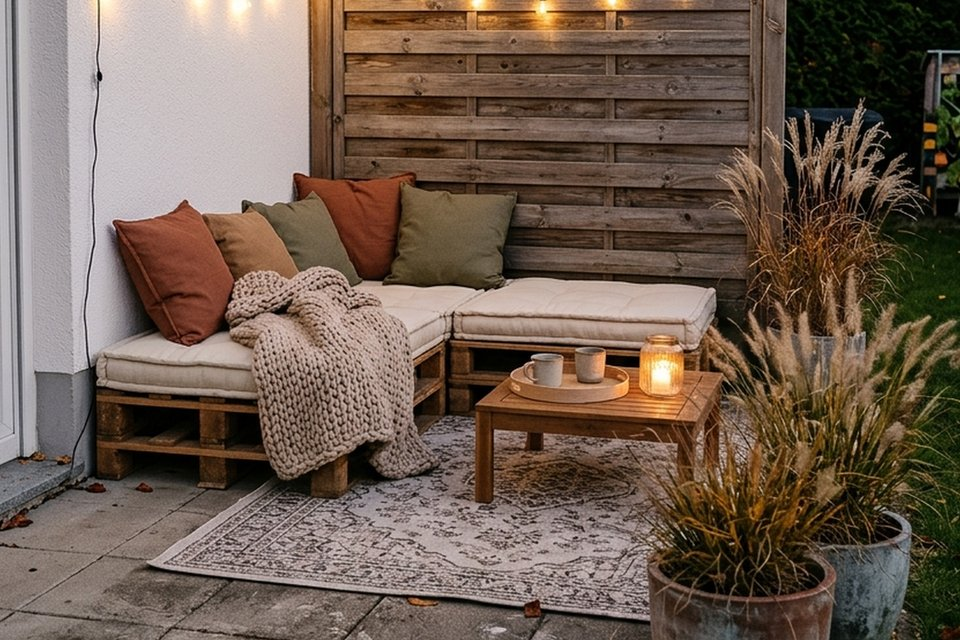

Lounge-Ecke für Balkon und Terrasse: 6 Ideen
Eine Ecke reicht für eine Lounge: Zwei Wände geben Halt und Geborgenheit, davor ein niedriger Tisch und weiche Kissen. Hier sind sechs Varianten – vom Palettenprojekt bis zur Lösung ohne Möbel.
Die 6 Ideen
1. Ecklounge aus Palettenmodulen
Die Idee aus dem Bild: zwei niedrige Module aus Holzpaletten (je zwei Paletten übereinander) über Eck gestellt, darauf dicke Sitz- und Rückenkissen. Paletten einmal abschleifen und ölen. Gebrauchte Europaletten gibt es günstig oder gratis.
ca. 80–170 €
2. Zwei Bänke über Eck
Zwei schlichte Holzbänke im rechten Winkel mit Auflagen und vielen Kissen – auch auf schmalen Balkonen machbar.
ca. 120–250 €
3. Boden-Lounge ohne Möbel
Teppich, große Bodenkissen und eine Sitzauflage an der Wand. So geht's: Balkon-Makeover für 100 €.
ca. 60–100 €
4. Ein Hängesessel
Mit eigenem Gestell steht er frei, ohne Deckenhaken. Braucht etwa 1,2 × 1,2 m.
ca. 80–200 €
5. Kleines Lounge-Set aus Polyrattan
Ein Zweisitzer mit Tisch – wetterfest und pflegeleicht, aber weniger individuell.
ca. 150–350 €
6. Zwei Klapp-Relaxsessel
Zwei Sessel mit kleinem Tisch dazwischen – im Winter zusammengeklappt. Vergleich: Klappmöbel für kleine Balkone.
ca. 130–300 €
Übersicht
| Idee | Platz | ca. Preis |
|---|---|---|
| Palettenlounge | ca. 2 × 2 m | 80–170 € |
| Zwei Bänke über Eck | ca. 1,5 × 1,5 m | 120–250 € |
| Boden-Lounge | ab 1 × 2 m | 60–100 € |
| Hängesessel mit Gestell | ca. 1,2 × 1,2 m | 80–200 € |
| Polyrattan-Set | ca. 1,5 × 2 m | 150–350 € |
| Zwei Klappsessel | ca. 1,5 × 1 m | 130–300 € |
Richtwerte für Deutschland, Stand November 2026. Die Preise schwanken je nach Händler und Saison.
Zur Ecklounge gehören immer: ein Teppich, ein niedriger Tisch, eine Decke und warmes Licht – siehe Solar, Strom oder Akku?
Häufige Fragen
Sind Paletten nicht zu schwer für den Balkon?
Eine Europalette wiegt etwa 25 kg, vier Stück also rund 100 kg – für normale Balkone unproblematisch, solange sie verteilt stehen.
Wohin mit den Kissen bei Regen?
In eine Auflagenbox oder nach drinnen. Wasserabweisende Bezüge helfen bei kurzen Schauern.